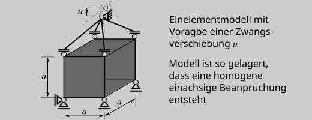
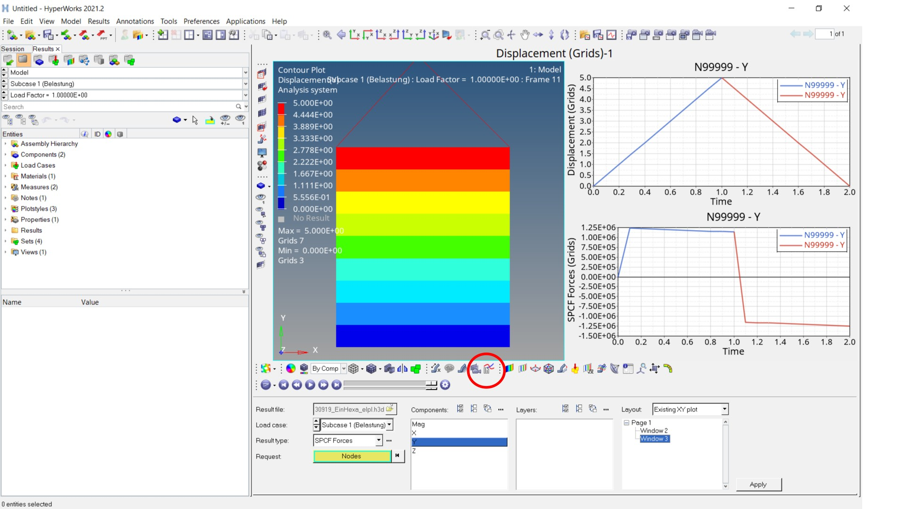
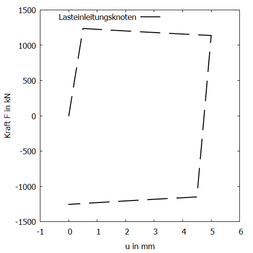
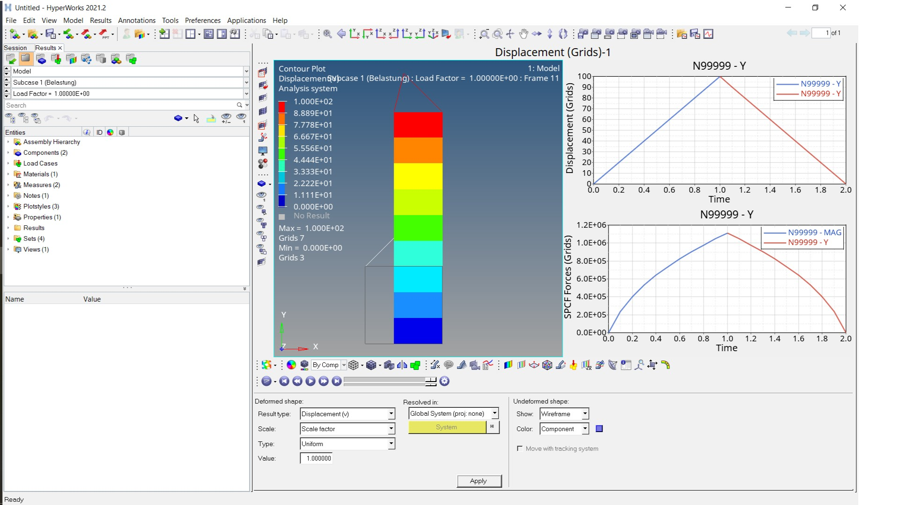
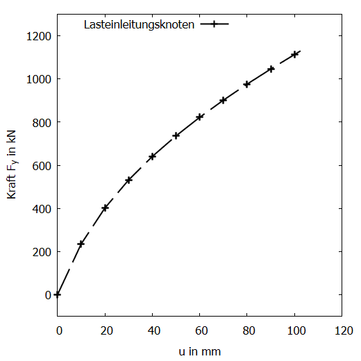

FEM Übungsbeispiel 2: Einelementmodell#
Vorabbemerkungen#
Übungsbeispiel für das FEM-Programm (solver) OptiStruct [AltairEIncb]
zum Ausprobieren unterschiedlicher Materialmodelle
zum Kennenlernen der Wegregelung und des Einsatzes mehrerer Rechenschritte Das Beispiel baut auf dem Übungsbeispiel 1 auf
Die im Folgenden verwendeten .fem-Dateien 230919_EinHexa.fem stehen über die CampUas-Seite zur verfügung.
Das verwendete FE-Modell ist ein Würfel mit der Kantenlänge \(a=50\text{mm}\), der nur durch ein 8-Knoten-Hexaederelement vom Typ CHEXA abgebildet wird.

Neue Features im Vergl. zum Übungsbeispiel 1#
Mehrere Lastfälle#
Über das Schlüsselwort SUBCASE können mehrere Lastfälle definiert werden. Durch die Angabe CNTNLSUB=YES rechnet der aktuelle Lastfall auf Basis der Ergebnisse des vorherigen weiter (Ansonsten startet die Rechnung “von vorne”). In diesem Beispiel wird also zuerst die Load mit der ID 21 aufgebracht und danach (da keine neue LOAD definiert wird, dieser Eintrag fehlt im zweiten Block) wieder zum Ausgangszustand zurückgerechnet (also entlastet). Die ID 21 ist hier der Last vom Typ SPCD zugewiesen.
SUBCASE 1
LABEL Belastung
$$ ========== Nonlinear Static ========
ANALYSIS NLSTAT
SPC = 2
NLPARM(LGDISP) = 1
NLOUT = 1
LOAD = 21
[...]
$$ ======================================
$$
SUBCASE 2
LABEL Entlastung
$$ ========== Nonlinear Static ========
ANALYSIS NLSTAT
CNTNLSUB=YES
SPC = 2
NLPARM(LGDISP) = 1
NLOUT = 1
[...]
Verformung als Belastung#
Bei nichtlinearem Modellverhalten, also hier durch das nichtlineare Materialverhalten, ist es für den Rechner einfacher Verformungslastfälle zu betrachten, als auf der Basis von Kräften zu rechnen. Dies erfolgt durch das Schlüsselwort SPCD, mit dem eine Knotenverformung am Knoten mit der ID 99999 vorgegeben wird. Gleichzeitig sind in OptiStruct für diesen Knoten mindestens die Richtnugen zu lagern, in denen die Verformung aufgebracht wird (hier werden über SPC alle Freiheitsgrage festgehalten).
$$ SPC Data
$$ Verschiebungsrandbedinung:
SPCD,21,99999,2,30.
$$ Lagerung:
SPC,2,99999,123456,0.0
$$
Materialmodelle#
Ein elastisch-plastisches Materialverhalten wird über
MAT1,331,200000.,,0.3,
MATS1,331,,PLASTIC,10.0,1,1,500
in dem Modell implementiert. Hyperelastisches Materialverhalten über
MATHE,332,MOONEY,,
,80.,20.,0.001
Was dort im Detail vorgegeben wird, gilt es über den Altair OptiStruct Reference Guide herauszufinden.
Berechnung, Ergebnis und Auswertung#
Für die weitere Berechnung ist die Eingabedatei 230919_EinHexa.fem noch ein wenig zu editieren:
elastisch-plastische Rechnung#
Durch die Angabe des Materials hier mit der ID 331 bei den Voluenelementeigenschaften (PSOLID) wird dem Element das elastisch-plastische Material zugewiesen.
PSOLID,77,331
PSOLIDX,77,1
Bei dem elastisch-plastischen Materialverhalten stehen die metallsichen Werkstoffe Pate. Die Verformung wird daher auf 10% der Probengröße eingestellt (die Umformtechnik sieht das mit Sicherheit anders), also hier $0,1\cdot 50\text{mm}=5\text{mm}.
SPCD,21,99999,2,5.
Damit ergibt sich mit etwas Glück das folgende Ergebnis (Kurvendarsttellung in zwei Windows, zusammengesetzt aus je einer Linie pro “SUBCASE” für die Verformung, Displacement, und die Lagerreaktion, SPCForce, jeweils in y-Richtung.

… hier das ordentliche Diagramm

Zur Interpretation des Kraft Verformungsverhaltens sind die folgenden Kurven zum Vergleich sinnvoll:
technischer Spannugs- und Dehnungsverlauf, berechnet aus dem Kraft-Verformungs-Verlauf
Spannungs-Dehungs-Verlauf als Ergebnis der Berechnung mit OptiStruct
wahrer Spannugns-Dehnungs-Verlauf, berechnet aus dem Kraft-Verformungs-Verlauf
Spannugns-Dehnugns-Verlauf aus den vorgegebenen Werkstoffkennwerten
hyperelastische Rechnung#
Durch die Angabe des Materials hier mit der ID 332 bei den Voluenelementeigenschaften (PSOLID) wird dem Element das elastisch-plastische Material zugewiesen.
PSOLID,77,332
PSOLIDX,77,1
Da das hyperelastische Materialverhalten für große Verzerrungen gedacht ist, ist das Beispiel z.B. für eine Dehnung von \(200%\) zu rechnen.
SPCD,21,99999,2,100.
Damit ergibt sich mit etwas Glück das folgende Ergebnis (Kurvendarsttellung in zwei Windows, zusammengesetzt aus je einer Linie pro “SUBCASE” für die Verformung (Displacement) und die Lagerreaktion (SPCForce) in y-Richtung.

… hier das ordentliche Diagramm

Zur Interpretation des Kraft Verformungsverhaltens sind die folgenden Kurven zum Vergleich sinnvoll:
technischer Spannugs- und Dehnungsverlauf, berechnet aus dem Kraft-Verformungs-Verlauf
Spannungs-Dehungs-Verlauf als Ergebnis der Berechnung mit OptiStruct
wahrer Spannugns-Dehnungs-Verlauf, berechnet aus dem Kraft-Verformungs-Verlauf
Spannugns-Dehnugns-Verlauf aus den vorgegebenen Werkstoffkennwerten
Viel Spaß beim Vergleichen!